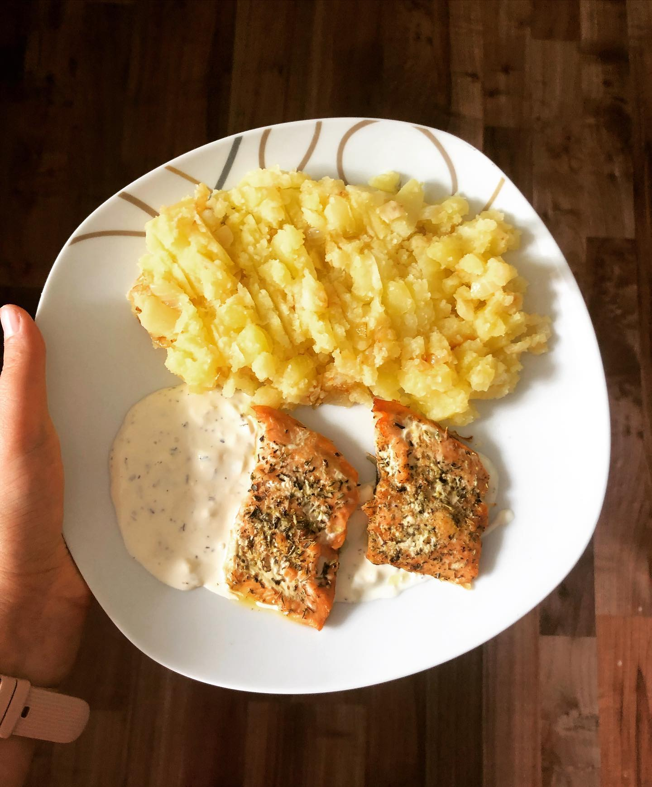

Bylinková omáčka podľa @nikcaplickova — Normy Jedál
Pečený losos, štouchané brambory s cibulkou a smetanovo-bylinková omáčka 😍
.
.
.
#obed #dnesniobed #sobotniobed #brambory #stouchanebrambory #bramboryscibulkou #losos #pecenylosos #lososnabylinkach #lososnamasle #smetanovaomacka #smetana #bylinky #bylinkovaomacka #zdraverecepty #zdravejidlo #zdravastrava #zdravyzivotnistyl #dobrouchut #mnam #mnamka #yummy #yummyfood